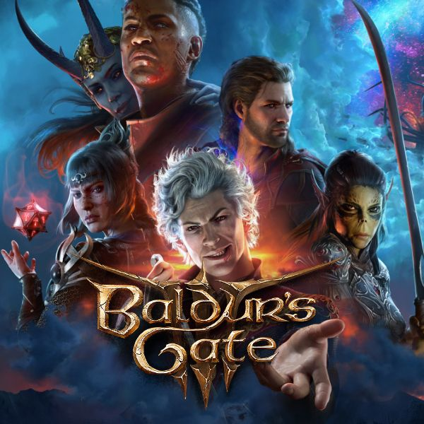
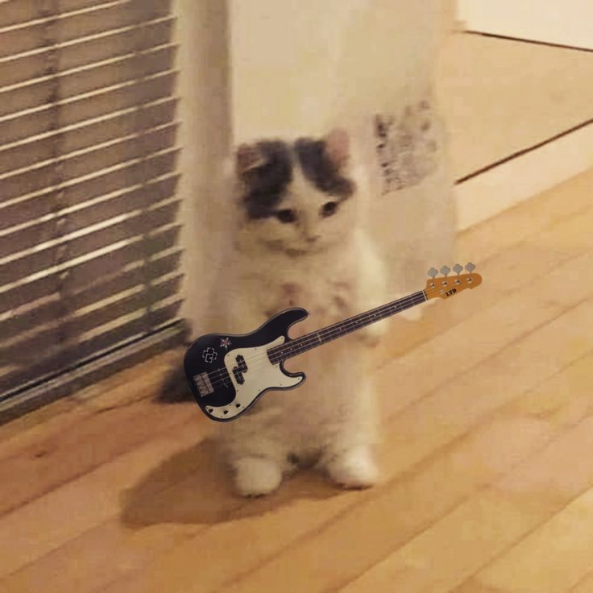

Hala Madrid: Mentality of the Kings
Menjadi pendukung Real Madrid bukan sekadar soal trofi, tapi soal mentalitas "Fino Alla Fine". Di blog ini, saya membedah bagaimana strategi manajemen klub berpengaruh pada pandangan terhadap manajemen sistem.
Menjadi pendukung Real Madrid bukan sekadar soal trofi, tapi soal mentalitas "Fino Alla Fine". Di blog ini, saya membedah bagaimana strategi manajemen klub berpengaruh pada pandangan terhadap manajemen sistem.
Football Manager 2024 adalah tentang data dan probabilitas. Menemukan "wonderkid" dan menyusun formasi yang fluid memerlukan ketelitian yang sama saat melakukan debugging pada struktur kode murni.

Roll for Initiative! Eksplorasi narasi di Baldur's Gate 3 membawa mekanik klasik ke level luar biasa. Saya melihat bagaimana world-building mencerminkan kompleksitas arsitektur informasi.

Bermain Bass adalah tentang menjaga fondasi. Di artikel ini, saya membahas korelasi antara menjaga tempo musik dan menjaga stabilitas sebuah backend aplikasi agar tetap berjalan mulus.